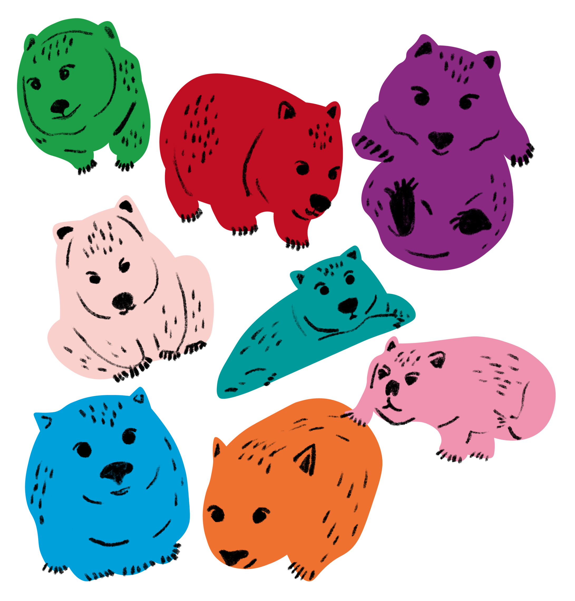

👾 Personal Project: E-commerce, retail webpage practice. Inspired by Wombats, I created a pet store online shopping landing page.
👾 Tools: Adobe Illustrator, Adobe Photoshop, Figma
👾 This page showcases my expertise in digital design, with a focus on eCommerce website development.
👾 Initial Idea 👾
What is an e-commerce landing page?
An eCommerce landing page is a purpose-driven page designed to achieve a single goal—whether that's encouraging visitors to purchase a product or sign up for a service. Typically created for a specific campaign, this dedicated page works best when paired with compelling ads, helping to increase conversion rates by guiding visitors toward a clear and focused action.

Source: Superdrug, PAZZO
Do I really need a landing page for ecommerce?
Most of the retail businesses nowadays need to expand their exposure, as money makes more money, people browse the internet more without physically going out. Therefore, an e-commerce landing page is really important.
As e-commerce retail is currently overnumbered, how do I stand out for my start-up business?
Keep trying and use strong marketing and products to attract customers. By launching campaigns faster than others, delivering clear messages, targeting specific audiences, and providing a better experience.
👾 Research 👾
From my experience in the retail industry, several key factors influence a business's long-term success, such as product variety, design, quality, pricing, brand image, and after-sales service. These elements also affect customer satisfaction, the likelihood of information spreading, and overall customer traffic. Whether a product is high-end or more budget-friendly can impact how customers perceive it and whether it fits their financial situation. When designing an e-commerce page, it's essential to consider who your audience is and how easy the site will be for them to purchase the items. Strong communication between the design and marketing teams is also crucial to ensure the page reflects the company’s brand identity. This ties closely into the roles of UI (User Interface) and UX (User Experience) design. In the end, successful web design relies on teamwork and collaboration.
For this project, I worked independently without a team. However, I’ve previously been part of the marketing team at the Institute for Information Industry in Taiwan, where the graphic designer was primarily responsible for webpage design, along with some aspects of user experience. In my own project, I’ve chosen to focus specifically on webpage design and the user interface, as these are the areas I want to highlight.
With this information, I can certainly create a basic landing page for the project. And through the project, I am aiming to learn more design marketing strategies.
👾 Background Story 👾
This start-up pet shop, featuring a wombat logo, is designed to attract pet lovers to shop online. The brand uses a soft, natural color palette with macaron-inspired tones, reflecting the idea that every pet is cherished like a child by their owner.
👾 Colour Chosen 👾

👾 Logo Design 👾
By repeating these simple and spontaneous wombat figures, and giving each one unique features.

Photo by Remy Gieling on Unsplash
Research On Banner Design - CTA
Example
I observed the advertising banners of Superdrug, Uniqlo, Starbucks, and Vitamin Company. Each brand incorporated elements like a strong sense of urgency, clear calls to action, bold headlines, engaging visuals, and prominent product images. The primary goal of these ads is to create a fear of missing out, encouraging consumers to act quickly to avoid losing a discount. Naturally, this strategy relies on the brand already having established a certain level of popularity.
Analysis
Applying the methods I learned, I also created an advertising banner for a pet store. Through this process, I realized how important it is to include all key marketing elements in the design.
If the company has any projects that require adjustments or additional work, I am more than happy to revise the layout. After all, every company and product has its own unique style of presentation.
👾 Online Banner Design 👾
CTA encourages web users to fill in a form, make a purchase, subscribe to a newsletter, etc. In my project, I urge the customers to purchase within a limited time.
👾 Webpage Design 👾
For this project, my focus was not on the product and product introduction, but on the ease of use and design of the website. Simple and easy to operate is my goal.
Using Figma, I designed a landing page for pet retail websites, aligning with the brand’s core colors. The webpage incorporates eight primary theme colors for a cohesive design.

🖥️ Full Look 🖥️

👾 Conclusion 👾
In this project, I focused heavily on User Interface Design and hope to eventually explore the User Experience side as well. Some of the challenges I encountered included a lack of testing, limited product photos, and insufficient advertising materials. However, the primary goal of the page was to demonstrate my understanding of marketing in e-commerce and my ability to create a webpage using Figma. With more practice and experience, I am confident that I can continue to improve and deliver even better results.